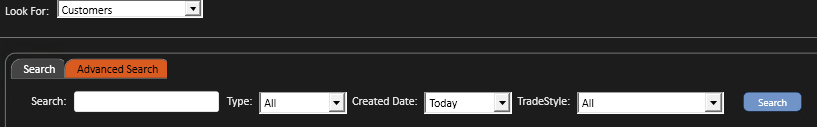
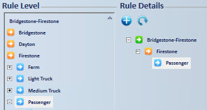
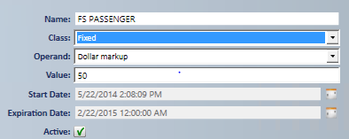
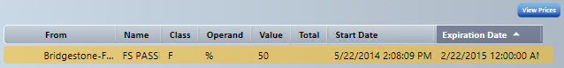

Customer (contract) pricing
Use customer rules to set pricing for one customer, on top of the price level assigned in the customer record or the store's default price level.
- On the Home screen, select FIND and make sure Customers shows in Look For:.
- Select the Advanced Search tab.
- Enter any of Customer Name, Customer Type, Created Date or Customer Trade Style, then select Search.
- You don't need to fill in every field.

- Select Customer Details , to the left of CustomerId.
- In the customer record, select the CUSTOMER RULES tab.
Note: You can set customer price rules at any level of the inventory tree, down to the SKU. A rule set on a branch applies to that branch and every branch and SKU below it. You can also select all items, but then the rule applies to ALL items, including non-inventoried items.
- Select the branch to set the rule on, or go to the bottom of the inventory tree and search for a specific SKU. Then select the plus sign under Rule Details.
- The tree structure for your rule displays in Rule Details. You need to open the branches yourself.


- Fill in the rule fields.
- Rule Name: A name based on the tree branch or SKU the rule is for.
- Class: Select one of these.
- Cumulative: A chained rule.
- Additive: Works the same as a cumulative rule.
- Fixed: Sets a fixed price that overrides price level rules.
- Margin Ceiling/Margin Floor
- Round Nearest: Rounds to the nearest value assigned.
- Round Up: Rounds up to the nearest value assigned.
- Base Change Rules: Changes the base factor for pricing or cost to something other than the default setting.
- Matrix: Sets pricing based on a range of price or a range of units.
- Operand: Select %, G% or $. The GP% formula is Base/(1.00-GP%).
- Value: Enter the value for the operand you selected. Negative values are allowed.
- Start Date: Select the dropdown and choose the start date.
- Exp. Date: Select the dropdown and choose the expiration date.
- If you don't need an expiration date, leave the default. A new rule's Exp. Date defaults to 15 years from the day it's created.
- Active: Make sure it's checked for active status.

Note: These fields fill in automatically as you enter the information above.
- Select View Prices to check that the rule displays correctly in general inventory search.
- Select Save
 when you're done.
when you're done.